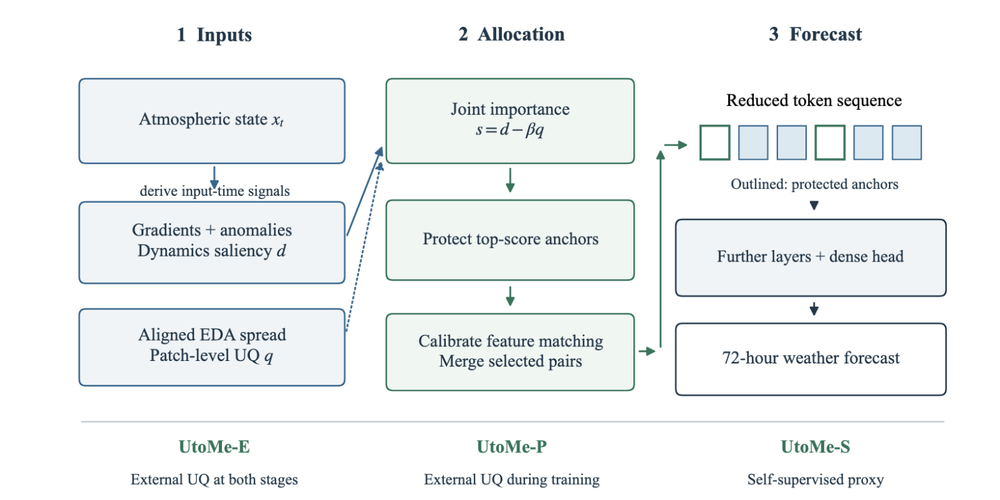
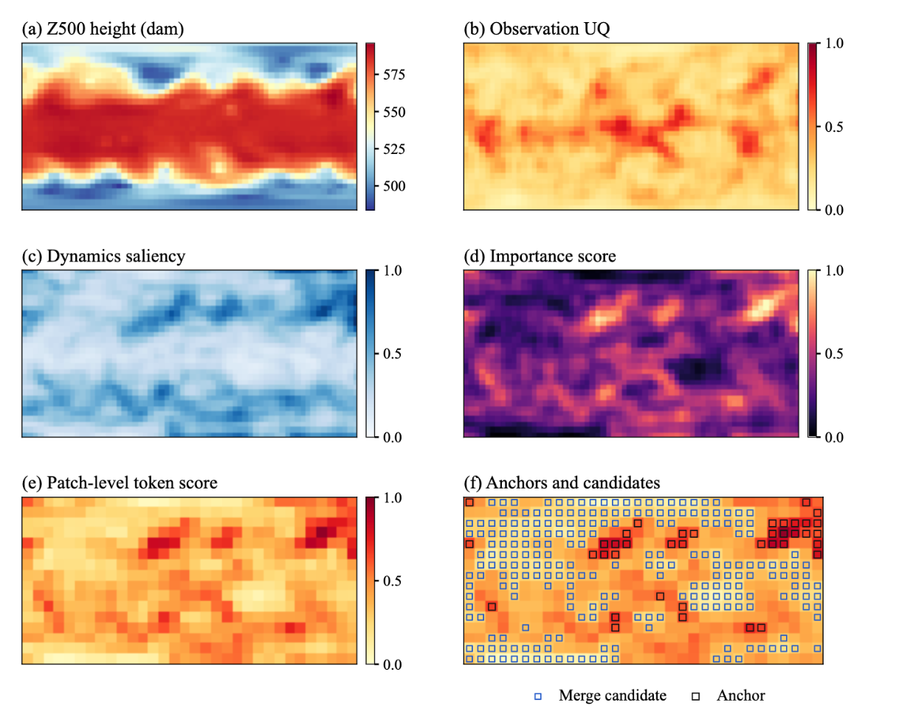
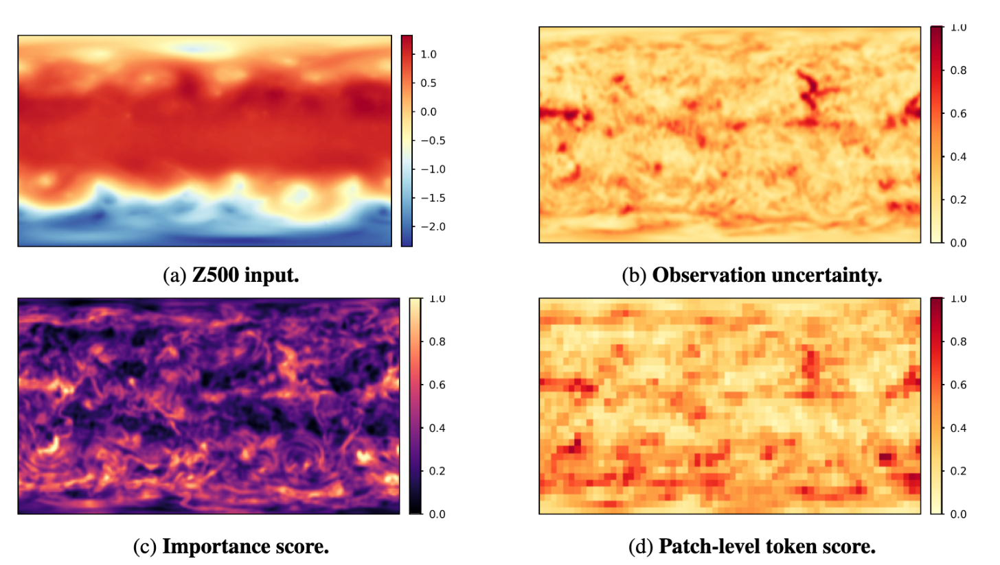

Observation-Uncertainty-Guided Token Merging for Weather Foundation Models
1Tulane University 2Oak Ridge National Laboratory
*Equal contribution †Corresponding authors
Emails: yzhang111@tulane.edu wangx2@ornl.gov
Weather transformers process dense reanalysis fields whose reliability varies across variables, locations, and weather regimes. Token merging can reduce computation, but feature similarity alone does not account for this heterogeneous input uncertainty. We introduce UtoMe, an observation-uncertainty-guided token merging framework that combines dynamics saliency with ensemble data assimilation spread as a relative input-reliability proxy. The resulting importance score protects selected tokens as anchors and calibrates bipartite matching between the remaining tokens. Three variants use external uncertainty at both training and inference, during training only, or neither stage. In ERA5 72-hour forecasting at two spatial resolutions, UtoMe improves Overall error over train-time ToMe at matched token budgets. At 1.40625° and 50% token reduction, UtoMe-E lowers Overall error from 67.32 to 53.00 at the same 0.55× encoder FLOPs. Small reductions remain close to the full-token baseline; larger reductions incur measurable accuracy losses. Component ablations and spatial uncertainty controls support combining dynamics with aligned uncertainty when allocating a weather transformer's token budget.
UtoMe uses observation uncertainty to guide training-time token merging for transformer-based weather forecasting. It turns weather-state saliency and low observation uncertainty into a patch-level token score, then uses that score to protect forecast-sensitive anchors and merge lower-importance redundant tokens.

| Method | Overall ↓ | ACC ↑ | Z500 ↓ | T850 ↓ | T2m ↓ | U10 ↓ | V10 ↓ | Compute ↓ |
|---|---|---|---|---|---|---|---|---|
| No merging | 32.41 | 0.964 | 156.76 | 1.299 | 1.269 | 1.339 | 1.360 | 1.00× |
| 25% token reduction | ||||||||
| ToMe | 42.45 | 0.949 | 206.02 | 1.452 | 1.483 | 1.572 | 1.724 | 0.86× |
| UtoMe-E | 39.59 | 0.952 | 191.93 | 1.413 | 1.454 | 1.527 | 1.645 | 0.86× |
| UtoMe-P | 39.61 | 0.952 | 191.98 | 1.425 | 1.459 | 1.530 | 1.648 | 0.87× |
| UtoMe-S | 39.84 | 0.951 | 193.14 | 1.416 | 1.458 | 1.533 | 1.656 | 0.87× |
| 50% token reduction | ||||||||
| ToMe | 67.32 | 0.905 | 328.21 | 1.846 | 2.056 | 2.136 | 2.347 | 0.55× |
| UtoMe-E | 53.00 | 0.913 | 256.72 | 1.759 | 2.051 | 2.038 | 2.433 | 0.55× |
| UtoMe-P | 53.14 | 0.907 | 257.37 | 1.762 | 2.056 | 2.045 | 2.444 | 0.57× |
| UtoMe-S | 57.01 | 0.908 | 276.99 | 1.752 | 1.968 | 2.009 | 2.335 | 0.57× |
Main results on 1.40625° ERA5 72-hour forecasting. Values are means over three seeds from the paper. Lower is better for Overall and per-variable wRMSE; higher is better for ACC. Compute is the encoder FLOPs ratio relative to no merging. Bold values are best within each token budget.


This work was done during an internship at Oak Ridge National Laboratory (ORNL).
This research was supported by ORNL's AI Initiative, sponsored by the Director's Research and Development Program at ORNL. Computing time was provided through the Oak Ridge Leadership Computing Facility. The manuscript was authored by UT-Battelle, LLC, under contract DE-AC05-00OR22725 with the US Department of Energy (DOE).
@inproceedings{zhang2026utome,
title = {UtoMe: Observation-Uncertainty-Guided Token Merging for Weather Foundation Models},
author = {Zhang, Yunbei and Wang, Janet and Xiao, Xi and Hamm, Jihun and Wang, Xiao},
booktitle = {Advances in Neural Information Processing Systems (NeurIPS)},
year = {2026}
}